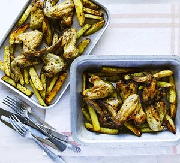

Spicy Oven Cooked Wings and Chips

Really easy way to cook chicken wings and chips in the oven. They come out crispy and tasty just the way we like it
Ingredients
- 1 tbsp Cajun seasoning
- 2 tbsp vegetable oil
- zest and juice 1 lime
- 750g large potato , cut into chips
- 1kg chicken wing
- green salad or coleslaw and ketchup , to serve
Method
- Heat oven to 200C/180C fan/gas 6. In a bowl, whisk together the Cajun seasoning, vegetable oil, lime zest and juice. Toss the chips, wings and Cajun mixture together in batches, so that everything is well coated.
- Cover a large baking sheet with foil, then arrange the chips around the outside and the wings in the middle. Season and bake for 20 mins, then turn the chips and return to the oven for a further 20-25 mins until the chips and wings are golden. Serve with green salad, or coleslaw and ketchup.
Homepage